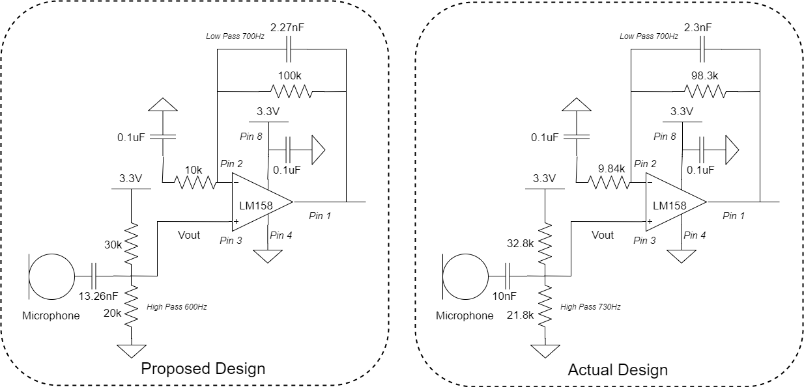
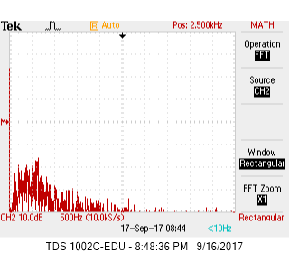
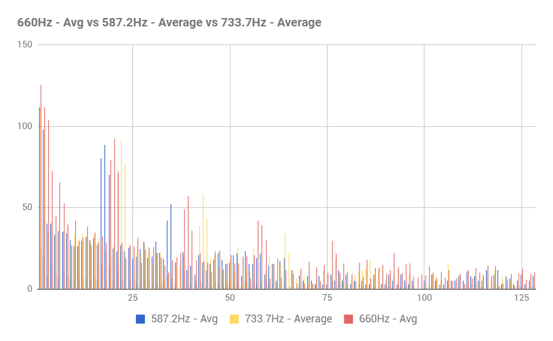
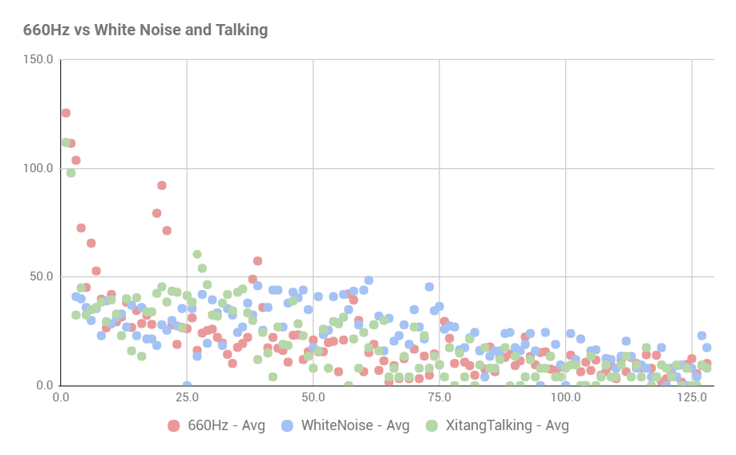

Purpose
The goal of this lab is to add two sensors to our robot. The first is a microphone, which detects a 660Hz tone amidst background noise, and the second is an IR sensor, which detects infrared lights blinking at 7kHz, 12kHz, and 17kHz. To process the analog data received by the two sensors, we make use of the Arduino's on-chip Analog-to-Digital converters and Open Music Labs Arduino FFT library.
Important Components
Trasures (provided by TAs)
Prelab
Analog-To-Digital Conversion (ADC)
The ATmega328 has an internal ADC with 10 bits of resolution, driven by an ADC clock we can control through a prescaler. The ADC takes 12 clock cycles to initialize and is capable of completing a single conversion in 13 ADC clock cycles. In a normal conversion, the system does a sample-and-hold at 1.5 ADC clock cycles into the conversion, holding the analog value found at that time. When conversion is complete, the result is written to the ADC Data Registers (ADCL and ADCH), and the ADC Interrupt Flag is set.
The ADC can operate in one of two modes: single conversion or Free Running mode. In Free Running mode, the ADC auto-triggers, meaning it starts a new conversion as soon as the ongoing one is finished. The ADC is constantly sampling and updating the ADC Data Register, and although the ADC Interrupt Flag is set each time, the conversions continue regardless of whether it is getting cleared. Each conversion still takes 13 clock cycles, but an extra half cycle is needed between conversions to reset the prescaler, requiring 13.5 cycles per conversion.
Successive approximation requires an input clock frequency of 50kHz to 200kHz for maximum resolution, which means data is being sampled at somewhere between around 4kHz to 15kHz in Free Running mode. In other words, each conversion takes between 70us and 270us. We can increase the clock frequency if we need fewer than 10 bits of resolution, but that probably won't be the case. The Arduino's analogRead() function is said to read at 100us per conversion, so the ADC clock frequency must be greater than 135kHz to be sampling faster.
Sampling
Whether referring to the acoustic data from the microphone or IR light data from the detector, it is important that we sample at a rate at least twice as fast as the highest frequency we're detecting in order to correctly identify all frequencies. The microphone is being used to detect a frequency of 660Hz, and any background noise, most likely caused by people speaking, would be mostly less than 4kHz, meaning a sampling frequency of 8kHz would suffice, so either analogRead() function would sample quickly enough. The IR treasure, however, blinks at a maximum of 17kHz, meaning our ADC should preferably be sampling at least at 34kHz. This is is well above the sampling frequency that analogRead() reaches.
Amplifying and Filtering Signals
In order to improve the quality of the input signals, we could try to make use of amplifiers and filters. We would need to analyze the FFT to determine whether we need a low-pass or high-pass filter, but I would guess that a low-pass filter will be more useful in both cases. For detecting a 660Hz acoustic signal, for example, a cutoff frequency of 1kHz would be conservative yet helpful, while for the 7kHz IR signal a cutoff frequency somewhere in the range of 9kHz could prove useful. We can implement simple passive filters using RLC circuits, or we can use an operational amplifier to implement an active low-pass filter, by connecting a resistor and capacitor in parallel in feedback. We can manipulate the values of the resistor and capacitor to set a cutoff frequency, and because we use an OpAmp the signal will also be amplified. We can also use an operational amplifier simply to amplify the signal, by tying the input signal to the negative end of the opamp, placing the positive end at a constant DC voltage, and putting a resistor in feedback.
All The Fourier Stuff
Here is a great PhET simulation for the basic concepts for FFT. The idea is that we take a time-dependent wave and express it as a sum of sinusoids. We only need to specify each sinusoid's coefficient and phase to express our data.

| Click to Run |
As in the simulation above, there must be a way to calculate all those coefficients and *transform* (hint hint) the time domain to the frequency domain, and vice versa. This is the idea behind the Fourier transform. The inverse Fourier transform turns the frequency domain into the time domain, but our code doesn't need it, so we won't concern ourselves with it here. The discrete time to frequency Fourier transform is given by:
Unfortunately, direct computation of this equation is an O(N^2) algorithm, meaning the time increases exponentially as we have more data. This is because, for every coefficient in the frequency domain, we need to add N terms. In essence, we are adding N terms, N times. The FFT (Fast Fourier Transform) is an O(NlogN) algorithm, which is must faster compared to the regular computation, especially when we have lots of data (eg. large N). The Cooley-Tukey algorithm is the most popular implementation of the FFT. The details are a bit too complicated to explain, but in general, it uses a recursive algorithm to break down data into pieces, resulting in an O(logN) depth for computations. The Open Music Labs Arduino library takes care of the FFT algorithm for us.
Acoustic Team: Felipe, Pei-Yi, Xitang
FFT Analysis
The electret microphone given in lab is attached on a breakout board that has an adjustable gain amplifier, with gain range from 25x to 125x. To take advantage of the on board amplifier, we adjusted the breakout board to nearly max out the microphone's gain. Also for best performance of the microphone, the "quieter" 3.3V instead of the 5V on the Arduino is used to power the microphone and a 0.1 uF decoupling capacitor is added between 3.3V to GND to minimize disturbance. Vout is connected to the oscilloscope and the followings FFT diagrams are observed:
 |
 |
| Figure 1: No Tone FFT Output Before Amplification | Figure 2: 660Hz FFT Output Before Amplification |
|---|
When no tone is playing (Figure 1), other than the DC, there is no noticeable peak throughout the frequency spectrum. The breakout microphone has very good built in noise rejection circuits and nosie only ranges from 0 to 20dB. Once the 660Hz tone starts playing (Figure 2), a striking 50dB peak can be observed at 660 Hz along with a 18dB harmonic at 1320Hz.
Amplifier Circuir
The microphone can pick up the frequency tone very well, but we still like to set up an amplifier circuit that further amplifies and bandpass filters the signal for more stable performance. We used the LM158 Op Amp and set up our amplifier circuit using a 10K and a 100K resister, and this delivers gains of 11 (11 = 1+100k/10k). To create a bandpass filter, a high pass filter of 600 Hz is added between Vout of microphone to + (Pin 3) of LM158 and a low pass filter of 700Hz is added in parallel to the 100k resister. In actual implementation, we couldn’t make an exactly 600Hz high pass filter because there is no capacitor 13nF capacitor available. Instead, we use the 10nF. This shifted the high pass filter cutoff frequency higher, but the amplification result comes out fine. The complete amplification circuit is shown below:
After amplification, when no tone is playing (Figure 3), noise is noticeably higher on average, which ranges from 0 to 27dB after amplification compared to 0 to 20dB range before amplification. Once the 660Hz tone starts playing (Figure 4), a striking 57dB peak can be observed at 660 Hz along with a steady slowly decreasing chain of harmonic peaks: 48dB at 1320Hz, 42dB at 1940Hz, 38dB at 2640Hz... The amplification is a success. The peak at 660Hz goes up by 7dB. A lot of harmonics show up and the second harmonics jumps from 18dB to 48dB after amplification.
|  |  |
| Figure 3: No Tone FFT Output after Amplification | Figure 4: 660Hz FFT Output After Amplification |
|---|
Distinguish a 660Hz tone from tones at 585Hz and 735Hz
After building our microphone, which successfully amplified the sound input, we set out to distinguish a 660Hz tone from close frequencies (namely 585Hz and 735Hz) and background noise. We hooked up the amplification output to the analog pin A0 of the Arduino and ran the below code where Pei-Yi extracted from the Open Music Labs Arduino FFT library.
//Uses default ADC sampling frequency = 9600 Hz
#define LOG_OUT 1 // use the log output function
#define FFT_N 256 // set to 256 point fft
#include <FFT.h> // include the library
void setup() {
Serial.begin(115200); // use the serial port
}
void loop() {
while (1) { // reduces jitter
return_freq();
}
}
byte return_freq() {
cli(); // UDRE interrupt slows this way down on arduino1.0
for (int i = 0 ; i < 512 ; i += 2) { // save 256 samples
fft_input[i] = analogRead(A0); // put analog input (pin A0) into even bins
fft_input[i + 1] = 0; // set odd bins to 0
}
fft_window(); // window the data for better frequency response
fft_reorder(); // reorder the data before doing the fft
fft_run(); // process the data in the fft
fft_mag_log(); // take the output of the fft
sei();
Serial.println("start");
for (byte i = 0 ; i < FFT_N / 2 ; i++) {
Serial.println(fft_log_out[i]); // send out the data
}
while (1); //run once, press reset to run again
}
We ran the code several times with different inputs (660Hz, 585Hz, 735Hz, white noise, talking noise) and pasted each run of FFT data received from the Arduino serial monitor to an excel spreadsheet and then averaged the FFT data before we plotted them out.
| Bin Number | 660Hz | 585Hz | 730Hz | No Tone | White Noise | Xitang Talking |
|---|---|---|---|---|---|---|
| 19 | 79.4 | 70.3 | 19.0 | 29.7 | 18.5 | 42.5 |
| 20 | 92.2 | 25.0 | 27.0 | 21.7 | 28.0 | 45.5 |
As we can see, the 660Hz tone is distinguished pretty well from the tones closest to it. We see that the different frequencies appear in different FFT bins. This is because the bins have a resolution of 37.5 Hz. The 660Hz tone is also quite distinct against white noise and Xitang talking near the microphone. At bin 19 and 20, 660Hz has high value of 79.4 and 92.2, which are far higher than the rest of the other inputs. We can easily set a threshold on both of these bins in our Arudino code to distinguishes when the 660Hz tone is played.
 Optical Team: Christina, Caroline, Ian
The objective of the lab session for the optics team was to build a circuit that produced a signal which could be read into the arduino to recognize “treasures” which our robot will encounter when navigating the maze. The treasures are blinking infrared LED circuits that blink at 7kHz, 12kHz, and 17kHz. In order to find and map the locations of these treasures in the maze, we need a method for detecting infrared light and also a method for determining the frequency at which the light is blinking.
Infrared Circuit
To detect the light, we can build a simple circuit using a phototransistor which operates at the wavelength of infrared light. The circuit is as follows:
When infrared light is present, the phototransistor will pass a set current proportional to the intensity of the IR light. This current will create a voltage drop across the resistor, which will be measured as Vout. Thus, high voltages correspond to high intensities of IR light. Holding a treasure up to our phototransistor and measuring the output on our scope resulted in this waveform:
This waveform is periodic at frequency of 6.849kHz, which is approximately our expected frequency, 7kHz. The measured amplitude of Vout depends much on the distance at which the treasure is held. We tried different resistor values to achieve a larger voltage drop (Vout) and settled on 5kΩ because it produced reasonable amplitudes.
Sampling and FFT Analysis
To read the signal into the Arduino, we used the on-board ADC in free sampling mode. By default, the Arduino analog reading function samples at about 9.6kHz. Our treasures blink at much higher frequencies than this. The highest frequency treasure blinks at 17kHz, so, by Nyquist’s sampling theorem, our sampling rate should be at least 34kHz.
To achieve this frequency, we changed the prescaler value for the ADC clock from 128 to 32 so that it can take samples as fast as 38.5kHz. The ADC was also put in free-running mode so that we do not need to call a read function. Instead, the ADC throws an interrupt when a sample has been taken. In the Interrupt Service Routine, we take the samples and store them in memory. Much of the code for changing these registers on the Arduino was adapted from an Arduino Blog.
With the samples stored in memory, we then used an FFT algorithm to produce the spectrum of our measured waveform. The FFT algorithm used is from Open Music Labs, and pieces of their example code was also utilized. We ran the FFT on samples collected from our circuit with the treasure held near. Our initial results, which we output to the serial monitor and plotted in MATLAB, displayed poorly as the peaks were not very definitive:
Bandpass Filter
We determined that our FFT peaks were not definitive because of other sources of infrared rays in our environment at other frequencies and their harmonics such as the lights above. To solve this problem, we made a bandpass filter with the specifications of allowing signals with frequencies between 6kHz and 18kHz and a gain of 5. The results of feeding the output through the filter first before inputting to the Arduino are shown below. It is clear that the filter had attenuated the undesired frequencies while providing a small gain to the desired frequencies. The peaks for the 7 kHz and 12 kHz are definitive and consistent now.

| 7kHz Treasure | 12kHz Treasure |
|---|
Calculation of Bin Number
As mentioned in earlier sections, we used a sampling rate of 38.5kHz. We took 256 samples, which means that each bin is approximately 150.39 Hz wide. Since the signal is symmetrical across the “negative” and positive frequencies, we can truncate the result of the fft in half i.e. 128 data points and plot it. 7kHz/150.39 = 46.5. Since bin 1 is actually DC (0 frequency), 7kHz should appear at bin 47.5. So we expected there to be a peak around bin 46 to 48, which was the case as shown above. For the 12 kHz treasure, the bin number should be 1+ 12kHz/150.39 = 80.79, or around bin 79 to 81. Since this is all imprecise math, we had the conditionals to check for one or more of these bins to exceed a certain threshold that was obtained through observation of the data.